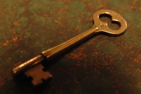

SCP-005

- Item nº:
- SCP-005
- Classe do objeto:
- Safe
Procedimentos Especiais de Contenção:
O SCP-005 não representa risco imediato em nenhum sentido direto. Mesmo assim, suas funções únicas exigem que medidas especiais sejam tomadas para restringir o acesso ao objeto e sua manipulação. A aprovação de pelo menos um (1) funcionário de Nível 4 é necessária para a retirada do objeto de sua área de contenção.
Descrição:
Na aparência, o SCP-005 se assemelha a uma chave ornamentada, com as características de uma chave típica produzida em massa na década de 1920. A chave foi descoberta quando um civil a usou para infiltrar uma instalação de alta segurança. O SCP-005 parece ter a capacidade única de abrir qualquer forma de fechadura (ver Apêndice A), seja mecânica ou digital, com relativa facilidade. A origem dessa capacidade ainda não foi determinada.
Notas adicionais: O SCP-005 pode ser usado como substituto de crachás de segurança perdidos, mas apenas sob a supervisão de pelo menos um (1) funcionário de Nível 4. O SCP-005 não pode ser usado para consertar máquinas de venda automática, abrir armários nem como chave reserva de casa de nenhum funcionário. A retirada do objeto das dependências resultará em eliminação imediata.
Apêndice A: Embora o SCP-005 tenha se mostrado eficaz para destravar quase qualquer tipo de dispositivo de trava, experimentos posteriores mostraram que os esforços para disfarçar a finalidade ou a identidade de uma fechadura tiveram pelo menos algum sucesso em derrotar a capacidade do SCP-005. Em aproximadamente 50% dos casos em que um voluntário não conseguiu identificar um dispositivo de trava como tal, o SCP-005 não teve sucesso em desativar o dispositivo. Devido a esses resultados, o SCP-005 foi provisoriamente classificado como "senciente", e novos testes estão sendo realizados para determinar suas capacidades cognitivas. No entanto, não há resultados que mostrem nenhuma característica que o impeça de identificar qualquer dispositivo de trava específico, apenas que o dispositivo mencionado foi fortemente ocultado e disfarçado.